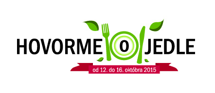
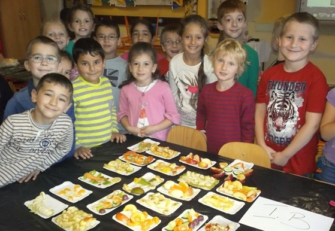
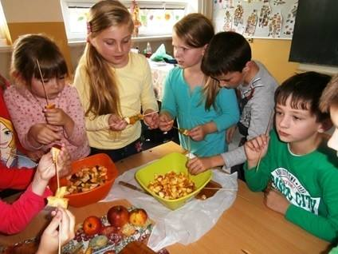
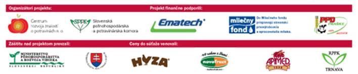

Tretí ročník týždňa „HOVORME O JEDLE“ má viacero noviniek
Slovenská poľnohospodárska a potravinárska komora v spolupráci s Centrom rozvoja znalostí o potravinách organizuje tretí ročník týždňa´HOVORME O JEDLE´. Projekt sa koná pod záštitou Ministerstva pôdohospodárstva a rozvoja vidieka SR a Ministerstva školstva, vedy, výskumu a športu SR. Odbornú garanciu prevzali Úrad verejného zdravotníctva SR, Národné poľnohospodárske a potravinárske centrum – Výskumný ústav potravinársky a Štátna veterinárna a potravinová správa SR.
V rámci týždňa ´HOVORME O JEDLE´, ktorý bude prebiehať v termíne od 12. do 16.10. 2015 (16. október - Svetový deň potravín), je už tradične pre všetky základné školy v SR pripravená súťažno-vzdelávacia aktivita ´HOVORME O JEDLE´. „Na každý deň v týždni je vyhlásená jedna denná téma so zameraním na jednotlivé potravinové komodity a ich význam pre ľudský organizmus. Úlohou žiakov a učiteľov základných škôl je vymyslieť a zrealizovať rôzne aktivity k vyhláseným denným témam a následne z nich pripraviť súťažný príspevok. Jednotlivé školy sa môžu rozhodnúť s ktorými dennými témami budú pracovať. Môžu pracovať s jednou, dvoma alebo aj všetkými vyhlásenými dennými témami. Každá téma bude hodnotená a ocenená samostatne,“ priblížila organizáciu aktivity Tatiana Belová, riaditeľka odboru potravinárstva a obchodu SPPK.

Novinkami sú výtvarná súťaž ´CHUTNÉ MAĽOVANIE´ a literárna súťaž ´NAČO SÚ NÁM POLIA, SADY´. V rámci výtvarnej súťaže ´CHUTNÉ MAĽOVANIE´ budú žiaci I. a II. stupňa základných škôl vytvárať výtvarné práce na témy totožné s vyhlásenými dennými témami v súťažno-vzdelávacej aktivite ´HOVORME O JEDLE´. Úlohou žiakov II. stupňa, ktorí sa zapoja do literárnej súťaže, bude napísať esej alebo úvahu na tému Načo sú nám polia, sady.
Aj v tomto ročníku týždňa ´HOVORME O JEDLE´ sú v spolupráci so strednými odbornými školami s potravinárskym zameraním pripravené praktické odborné exkurzie pre žiakov základných škôl. Prostredníctvom praktických odborných exkurzií sa žiakom otvára možnosť dozvedieť sa množstvo zaujímavých informácií z potravinárskej výroby (suroviny z ktorých sa potraviny vyrábajú, spôsob výroby jednotlivých druhov potravín, vlastnosti potravín a pod.), vidieť ako funguje potravinárska výroba a vyskúšať si prípravu niektorých potravinárskych výrobkov pod vedením majstrov odbornej výchovy pôsobiacich na stredných odborných školách.
Cieľom všetkým aktivít týždňa ´HOVORME O JEDLE´ je vyvolávať a podporovať spoluprácu a aktívnu účasť detí, mládeže a dospelých pri budovaní spôsobilosti k vhodnému výberu potravín a životného štýlu, schopnosti prevziať zodpovednosť za svoje zdravie, povedomia o význame potravín pri podpore regionálneho rozvoja, zamestnanosti a ochrane životného prostredia.

Registrácia škôl do súťažných aktivít týždňa ´HOVORME O JEDLE´ je otvorená do 11. 10. 2015. Súťažné príspevky môžu školy zasielať do 25. 10. 2015.
Súťažné aktivity tretieho ročníka týždňa ´HOVORME O JEDLE´ opäť prinesú víťazným školám a jednotlivcom hodnotné ceny. „Školy zapojené do súťažno-vzdelávacej aktivity ´HOVORME O JEDLE´ hrajú o finančné ceny v hodnote 330 eur, jedlé prekvapenie pre najaktívnejšie triedne kolektívy víťazných škôl, ale aj suroviny z hydiny na prípravu obedu pre celú školu. V rámci súťaže bude udelená aj cena ´najaktívnejšia škola súťaže Hovorme o jedle´. Túto cenu získa škola, ktorá sa zapojí do najväčšieho počtu vyhlásených denných tém a ktorej súťažné príspevky získajú najlepšie hodnotenie komisie. Žiaci, ktorých práce budú vyhodnotené vo výtvarnej súťaži ´CHUTNÉ MAĽOVANIE´ a v literárnej súťaži ´NAČO SÚ NÁM POLIA, SADY´ komisiou ako najlepšie získajú zaujímavé vecné ceny,“ ozrejmila Tatiana Belová.
Minulý rok sa do súťažno-vzdelávacej aktivity ´HOVORME O JEDLE´ zapojilo 224 základných škôl s počtom žiakov 36 713. Hodnotiaca komisia posudzovala celkovo 984 súťažných príspevkov k jednotlivým vyhláseným denným témam. Veľké poďakovanie za úspešný rozbeh týždňa ´HOVORME O JEDLE´ patrí najmä všetkým učiteľom a žiakom zapojených základných škôl. Veríme, že aj tretí ročník týždňa ´HOVORME O JEDLE´ bude príťažlivý pre základné školy a prinesie mnoho kreatívnych a inovatívnych nápadov do vzdelávania v oblasti potravín a výživy na základných školách. Veríme, že nápady zúčastnených škôl ďalej poslúžia na inšpiráciu k vzdelávaniu o potravinách a výžive aj iným žiakom a učiteľom v SR a budú dobrým príkladom pre ich nasledovanie.

Tretí ročník týždňa ´HOVORME O JEDLE´ finančne podporili Mliečny fond, do ktorého prispievajú slovenskí prvovýrobcovia a spracovatelia mlieka, Slovenský mliekarenský zväz, Slovenský zväz prvovýrobcov mlieka, spoločnosť Ematech s.r.o. a Poľnohospodársko-podielnické družstvo Prašice sídlo Jacovce. Ceny do súťaží venovali spoločnosti Hyza a.s., Novofruct SK, s.r.o., Apimed a Regionálna poľnohospodárska a potravinárska komora Trnava. Ďalšími partnermi projektu sú Slovenský cukrovarnícky spolok, Únia hydinárov Slovenska a Únia potravinárov Slovenska.
Elektronickú registráciu a ďalšie informácie o aktivitách týždňa ´HOVORME O JEDLE´ nájdete na www.opotravinach.sk v časti ´Hovorme o jedle´.
